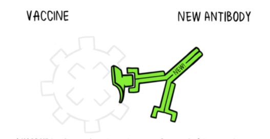

Mikrobet janë rreth nesh, si në mjedisin tonë ashtu
edhe në trupat tanë. Kur një person është i
ndjeshëm dhe ata hasin një organizëm të
dëmshëm, kjo mund të çojë në sëmundje
dhe vdekje.
Trupi ka shumë mënyra për t’u mbrojtur nga
patogjenët (organizmat që shkaktojnë sëmundje).
Lëkura, mukusi dhe qerpiku (qimet mikroskopike që
largojnë mbeturinat nga mushkëritë) të gjitha
funksionojnë si barriera fizike për të parandaluar
që patogjenët të hyjnë në trup në
radhë të parë.
Kur një patogjen infekton trupin, mbrojtja e trupit tonë, e
quajtur sistemi imunitar, shkaktohet dhe patogjeni sulmohet dhe
shkatërrohet ose kapërcehet.
Përgjigja natyrale e trupit
Një patogjen është një bakter, virus, parazit
që mund të shkaktojë sëmundje brenda trupit. Çdo
patogjen përbëhet nga disa nënpjesë, zakonisht
unike për atë patogjen specifik dhe sëmundjen që
shkakton. Nënndarja e një patogjen që shkakton formimin
e antitrupave quhet antigjen. Antitrupat e prodhuar në
përgjigje të antigjenit të patogjenit janë
një pjesë e rëndësishme e sistemit imunitar. Ju
mund t’i konsideroni antitrupat si ushtarë në sistemin
mbrojtës të trupit tuaj. Secili antitrup, ose ushtar,
në sistemin tonë është trajnuar për të
njohur një antigjen specifik. Ne kemi mijëra antitrupa
të ndryshëm në trupat tanë. Kur trupi i njeriut
është i ekspozuar ndaj një antigjeni për herë
të parë, duhet kohë që sistemi imunitar të
përgjigjet dhe të prodhojë antitrupa specifikë
për atë antigjen.
Si ndihmojnë vaksinat
Vaksinat përmbajnë pjesë të dobësuara ose
joaktive të një organizmi (antigjeni) të veçantë
që shkakton një përgjigje imune brenda trupit. Vaksinat
më të reja përmbajnë projektin për prodhimin
e antigjeneve sesa vetë antigjenin. Pavarësisht nëse
vaksina përbëhet nga vetë antigjeni ose projekti
në mënyrë që trupi të prodhojë antigjen,
ky version i dobësuar nuk do të shkaktojë
sëmundjen tek personi që merr vaksinën, por kjo do
të nxisë sistemin e tyre imunitar të përgjigjet
shumë do të kishte në reagimin e tij të parë
ndaj patogjenit aktual.
